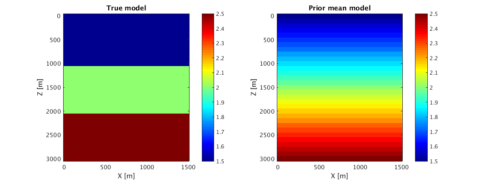
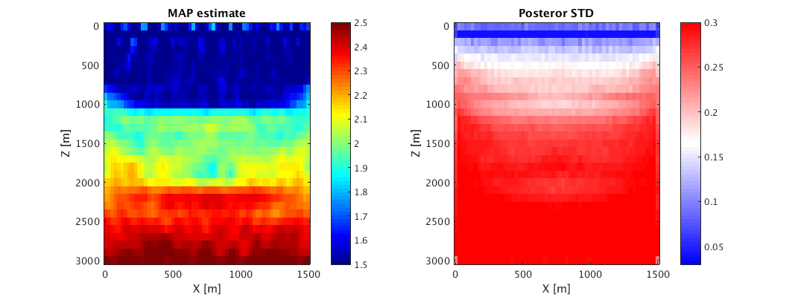
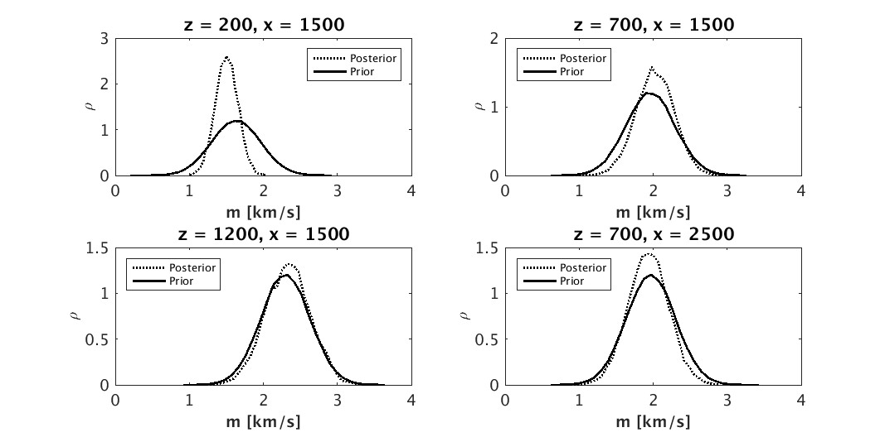
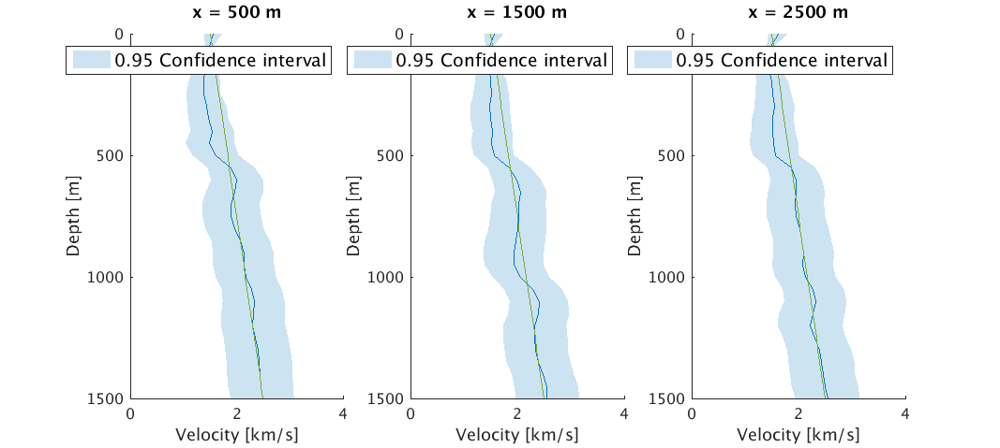

Written by Zhilong Fang (zfang@eoas.ubc.ca), April 2018.
Contents
Uncertainty quantification for Wavefield Reconstruction Inversion
This script will show examples of uncertainty quantification for Wavefield Reconstruction Inversion using a simple layer model. The theory behind this method, named Uncertainty Quantification for Wavefield Reconstruction Inversion is described in [1].
The modeling used in this example is described in https://slim.gatech.edu/SoftwareDemos/applications/Modeling/2DAcousticFreqModeling/modeling.html.
System requirements:
- This script was tested using Matlab 2015b with the parallel computing toolbox.
- Parallelism is achieved by factorizing overdetermined systems (one for each frequency) in parallel. Each factorization requires about 1 GB.
- Runtime is about 1 hours when factorizing 3 overdetermined systems in parallel. Tested using 2.6GHz Intel processors.
addpath(genpath(['../mbin']));
Models
vtfile = ['../data/SimpleLayerkm.mat']; vpfile = ['../data/Ini_Vel.mat']; MAPfile = ['../result/MAP.mat']; STDfile = ['../result/STD.mat']; SMPfile = ['../result/SMP.mat']; [vt n d o] = ReadAllData(vtfile); [vp n d o] = ReadAllData(vpfile); [vMAP n d o] = ReadAllData(MAPfile); [vSTD n d o] = ReadAllData(STDfile); [zz xx] = odn2grid(o,d,n); % The true model and prior mean model are figure;subplot(1,2,1) imagesc(zz,xx,vt);xlabel('X [m]');ylabel('Z [m]');a =caxis;colorbar title('True model');ca=caxis; subplot(1,2,2) imagesc(zz,xx,vp);xlabel('X [m]');ylabel('Z [m]');caxis(a);colorbar title('Prior mean model') x0=10; y0=10; width=800; height=300; set(gcf,'units','points','position',[x0,y0,width,height])
Inversion result
The MAP estimate and posterior STD
figure;subplot(1,2,1) imagesc(zz,xx,vMAP);xlabel('X [m]');ylabel('Z [m]');a =caxis;colorbar title('MAP estimate');caxis(ca) subplot(1,2,2) imagesc(zz,xx,vSTD);xlabel('X [m]');ylabel('Z [m]');caxis(a);colorbar title('Posteror STD');caxis([0.03 0.3]);colormap(gca,'redblue') x0=10; y0=10; width=800; height=300; set(gcf,'units','points','position',[x0,y0,width,height])
The distribution comparison
DistPoint = {[5,31], [15,31], [25,31], [15,51]};
RTOSMP = load(SMPfile);
RTOSMP = RTOSMP.SMP;
stdvp = 0.33;
Mfsize = 14;
for i = 1:length(DistPoint)
tmp = DistPoint{i};
distind(i) = sub2ind(n,tmp(1),tmp(2));
end
smpp = randn(length(DistPoint),100000)*stdvp;
for i = 1:length(distind)
smpp(i,:) = smpp(i,:) + vp(distind(i));
end
[rhopri, xpri] = CalDist(smpp(:,:), 30);
[rhopst1, xpst1] = CalDist(RTOSMP(distind,:), 30);
figure;
for i = 1:size(rhopst1,1)
% beta = (xpri(i,2)-xpri(i,1))/(xpst(i,2)-xpst(i,1));
subplot(2,2,i);
plot(xpst1(i,:),rhopst1(i,:),':k','linewidth',2);hold on;
plot(xpri(i,:),rhopri(i,:),'k','linewidth',2);
hl = legend('Posterior', 'Prior');
set(hl,'fontsize',10);
if i == 1
set(hl,'Location','NorthEast');
else
set(hl,'Location','NorthWest');
end
set(gca,'fontsize',Mfsize);
xlabel('\bf{m} [km/s]','fontsize',Mfsize);
ylabel('\rho','fontsize',Mfsize);
xlim([0,4])
xpi = DistPoint{i};
str = ['z = ' num2str(d(1)*(xpi(1)-1)) ', x = ' num2str((xpi(2)-1)*d(2))];
title(str)
end
x0=10;
y0=10;
width=800;
height=400;
set(gcf,'units','points','position',[x0,y0,width,height])
 The confidence interval
V = RTOSMP; alpha = 0.95; for i = 1:size(V,1) CI(i,:) = confidence_interval(V(i,:),alpha); end CIout(:,:,1) = reshape(CI(:,1),n); CIout(:,:,2) = reshape(CI(:,2),n); xpos = [ 500 1500 2500]; xid = [11,31,51]; figure; x0=100; y0=100; width=800; height=400; set(gcf,'units','points','position',[x0,y0,width,height]) for i = 1:length(xid) subplot(1,3,i); k = xid(i); mtmp = vMAP(:,k); stdtmp = vSTD(:,k); CI1 = mtmp - CIout(:,k,1); CI2 = -mtmp + CIout(:,k,2); [l p]=boundedline(zz,mtmp,[CI1 CI2]); ylabel('Velocity [km/s]','fontsize',12) xlabel('Depth [m]','fontsize',12) h = legend([p(1)],'0.95 Confidence interval'); hold on plot(zz,vp); view(90,90);ylim([0,4]);xlim([0,1500]); str = ['x = ' num2str(xpos(i)) ' m']; title(str) set(h,'fontsize',14);set(gca,'fontsize',12); end
References
[1] Zhilong Fang, Curt Da Silva, Rachel Kuske, Felix J. Herrmann, 2017 Uncertainty quantification for inverse problems with weak PDE-constraints